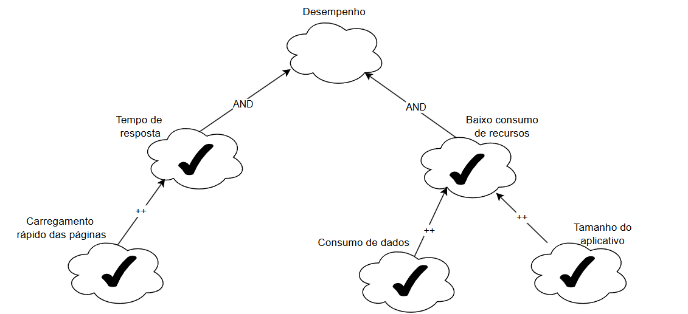

Introdução
Os Requisitos Não-Funcionais (RNFs) são essenciais para a qualidade de sistemas de software, influenciando usabilidade, desempenho e conformidade. No entanto, são frequentemente mal definidos, o que afeta negativamente a satisfação dos stakeholders e a qualidade do produto.
Devido à sua subjetividade e complexidade, a documentação e análise dos RNFs são desafiadoras.
Para lidar com essas dificuldades, foi proposto o NFR Framework (Chung et al., 2000), que modela RNFs como softgoals — objetivos sem critérios de satisfação claros — organizados em Softgoal Interdependency Graphs (SIGs), que mostram as relações de apoio ou conflito entre os RNFs.
SIG - Softgoal Interdependency Graph
Gráfico de interdependências entre softgoals é um gráfico que registra as considerações do desenvolvedor sobre os softgoals, como também armazenam um registro completo das decisões de desenvolvimento e da lógica do projeto de forma gráfica e concisa. Esse registro inclui Requisitos Não-funcionais e suas alternativas, decisões e justificativas associadas às decisões
Tipos de Softgoals
- Softgoals NFR: Representam os requisitos não-funcionais (ex: segurança, usabilidade).
- Softgoals de Operacionalização: Soluções práticas para atender aos RNFs (ex: processos, estruturas de dados).
- Softgoals de Afirmação: Características do domínio que justificam decisões (ex: prioridades, carga de trabalho).
Figura 1: Tipos de Softgoals Fonte: (CHUNG et al., 2000)
Interdependências
As interdependências definem as relações entre os softgoals. Os tipos de interdependências utilizadas pelo framework são os refinamentos e as contribuições(CHUNG et al., 2000).
Decomposições
As decomposições têm o objetivo de refinar softgoals para obter softgoals mais especializados e estes possam auxiliar na construção do projeto. Os quatro tipos de decomposições utilizadas pelo NFR Framework são descritos abaixo:
-
Decomposição de Softgoal NFR: refina ou subdivide um softgoal NFR em outros específicos. Isso pode ajudar a dividir grandes problemas em problemas menores e oferece um aspecto útil para lidar com ambiguidades e prioridades.
-
Decomposição de Operacionalização: subdivide um softgoal de operacionalização em outros softgoals de operacionalização mais específicos. Operacionalizações são úteis para definir uma solução geral e refiná-la em soluções mais específicas.
-
Decomposição de Afirmação (Claims): refina um softgoal de afirmação em outros softgoals de afirmação. Ela é importante para apoiar ou negar justificativas específicas de projeto.
-
Priorização: A priorização é um tipo especial de decomposição, onde ocorre o refinamento de um softgoal em outro softgoal com o mesmo tipo e tópicos, mas com uma prioridade associada.
Figura 2: Tipos de Decomposições
Fonte: (CHUNG et al., 2000)
, 2025.
Contribuições
No NFR Framework pode-se utilizar de vários tipos de contribuições que explicam de que maneira a satisfação ou não de um softgoal descendente auxilia a satisfação do softgoal ascendente. Abaixo estão os tipo de contribuições:
-
AND: Todos os softgoals descendentes precisam ser satisfeitos para satisfazer o ascendente.
-
OR: Basta que um descendente seja satisfeito para satisfazer o ascendente.
-
MAKE (++): Satisfação total do descendente garante satisfação total do ascendente.
-
BREAK (--): Satisfação total do descendente gera negação total do ascendente.
-
HELP (+): Satisfação parcial do descendente contribui positivamente para o ascendente.
-
HURT (-): Satisfação do descendente prejudica parcialmente o ascendente.
-
UNKNOWN (?): Contribuição incerta, pode ser positiva ou negativa.
-
EQUALS: O descendente acompanha exatamente o estado do ascendente (satisfeito ou negado).
-
SOME (+/-): Contribuição positiva ou negativa, mas sem certeza se é parcial ou total.
Abaixo nas figuras 03 e 04 encontra-se respectivamente exemplos das contribuições " AND ", " OR " e " MAKE ", "BREAK", " HELP " e " HURT ".
Figura 3: Tipos de Decomposições

Fonte: (SILVA, Reinaldo Antônio. NFR4ES)
, 2025.
Figura 4: Tipos de Decomposições
Fonte: (SILVA, Reinaldo Antônio. NFR4ES)
, 2025.
Propagação de Impactos
A propagação de impactos denota a relação entre os requisitos não-funcionais e como a mudança em um requisito pode provocar mudanças em requisitos relacionados. São utilizados para representar esses impactos os softgoals de impacto. Abaixo estão representados a notação com a qual eles são utilizados:
-
✓ (satisfeito): indica que um requisito não funcional contribui de forma positiva para a satisfação de outro requisito.
-
𝒲+ (fracamente satisfeito): representa uma relação positiva, porém menos intensa do que a notação ✓.
-
X (negado): indica que um requisito não funcional prejudica ou contradiz a realização de outro requisito.
-
𝒲- (fracamente negado): similar à notação X, porém com uma influência negativa menos forte.
-
🗲 (conflitante): representa uma relação de conflito, em que os requisitos apresentam aspectos tanto positivos quanto negativos.
-
u (indeterminado): indica uma relação desconhecida ou indefinida entre os requisitos, quando não há informações suficientes para avaliar o impacto.
Figura 5 - Impactos softgoals
Fonte: (SILVA, Reinaldo Antônio. NFR4ES)
, 2025.
Cartões de Especificação
A utilização de cartões de especificação proporciona uma abordagem estruturada e clara para documentar cada requisito não funcional. Esses cartões reúnem informações fundamentais, como a descrição, a justificativa, a origem, os critérios de aceitação, as dependências, a prioridade, possíveis conflitos e o histórico de alterações. A Tabela 1 apresenta uma visão detalhada e de fácil compreensão dos RNFs, destacando os principais elementos que devem compor cada cartão de especificação.
Tabela 1:Modelo de Cartões de Especificação
| Item | Descrição |
|---|---|
| Nr Requisito (Um número sequencial) | Classificação: Classificação do RNF conforme hierarquia do catálogo |
| Descrição | Declaração única do significado do requisito |
| Justificativa | Justificativa sobre a criação do requisito |
| Origem | Origem do requisito (stakeholder, norma técnica, etc) |
| Critério de Aceitação | Métrica do requisito que possa ser testada e que deve ser satisfeita |
| Dependências | Requisitos relacionados a este |
| Prioridade | Um número usado para decidir a importância relativa deste requisito entre os outros RNFs (varia de 1 a 10). A prioridade mínima é 1 e a máxima é 10 |
| Conflitos | Requisitos conflitantes com este |
| História | Data de criação e de modificações |
Fonte: Giovana Barbosa , 2025.
Objetivo
O objetivo deste trabalho é desenvolver um artefato, fundamentado no NFR Framework, que possibilite a identificação, representação e análise dos requisitos não funcionais relacionados ao aplicativo do Detran-DF.
Metodologia
Para uma abordagem completa, dividimos a metodologia em algumas fases, sendo elas:
-
Fase 1: Elicitação de Requisitos Não-Funcionais:
Primeiro fizemos a elicitação de requisitos na etapa anterior, que pode ser encontrada nesse link Requisitos Elicitados. -
Fase 2: Criação de Grafos de Decomposição de Softgoals e Criação de Cartões de Especificação:
Inspirando-se em técnicas de especificação (como as descritas no livro Requirements Engineering Fundamentals) faremos o cartão de especificação para cada decomposição:
-
Para cada softgoal, criar cartões que detalhem:
-
Descrição do RNF.
-
Alternativas de implementação.
-
Dependências e restrições.
-
Os cartões ajudam a capturar os trade-offs entre alternativas e priorizações.
-
-
Fase 3: SIG:
Após a criação dos grafos de decomposição, o SIG é consolidado:
- SIG: Integrar todos os softgoals, suas contribuições e refinamentos no grafo final, criando uma visão abrangente dos RNFs para o aplicativo Detran-DF.
-
Fase 4: Avaliação e Validação:
Por fim, validar o artefato construído, considerando os seguintes passos:
-
Seleção entre alternativas: Comparar diferentes abordagens utilizando critérios de qualidade, custos e impacto para selecionar a melhor solução.
-
Revisão com stakeholders: Submeter o SIG final para análise dos stakeholders e ajustar conforme o feedback recebido.
-
-
Fase 5: Propragação de impactos: No NFR Framework, a propagação de impactos consiste em identificar as relações de dependência entre os requisitos não funcionais e analisar como alterações em um requisito podem influenciar outros requisitos relacionados, utilizando, como mostrado anteriormente, as notações dos softgoals de impacto para representar graficamente essas relações.
Qual integrante fez cada NFR
Tabela 1 -Distribuição dos NFR entre os integrantes .
| Integrante | NFR |
|---|---|
| Pedro Camilo | Usabilidade |
| Giovana Barbosa | Acessibilidade |
| Erick | Desempenho e Eficiência |
| Maria Eduarda | Segurança |
| João Lobo | Confiabilidade e Disponibilidade |
| Gabriel Mendes | Portabilidade / Compatibilidade |
| Luiz Bessa | Qualidade e Feedback |
1. NFR Usabilidade
Tabela 2:Requisitos não funcionais de usabilidade
| Código | Requisito |
|---|---|
| RNF01 | Interface intuitiva e fácil de navegar |
| RNF04 | Área educacional com explicações e vídeos |
| RNF09 | Layout com foco em simplicidade e legibilidade |
| RNF12 | Explicações acessíveis sobre siglas (ex: RENAVAM) |
| RNF14 | Interface adaptada para idosos e iniciantes |
| RNF17 | Feedback visual e sonoro nas interações do usuário |
| RNF20 | Interface com poucos elementos por tela para facilitar leitura |
Cartões de Especificação:
Abaixo seguem as tabelas contendo os cartões de especificação dos requisitos não funcionais utilizados para a criação do NFR.
Tabela 3: Interface intuitiva e fácil de navegar
| Item | Descrição |
|---|---|
| Nr Requisito | RNF01 |
| Classificação | Usabilidade > Interface |
| Descrição | O sistema deve apresentar uma interface clara e organizada, facilitando a navegação e permitindo que o usuário encontre rapidamente as funcionalidades desejadas, mesmo sem conhecimento técnico prévio. |
| Justificativa | Facilitar o uso do sistema por qualquer perfil de usuário |
| Origem | BS13, IS07 |
| Critério de Aceitação | Usuários realizam tarefas principais sem necessidade de treinamento |
| Dependências | RNF09, RF20 |
| Prioridade | 10 |
| Conflitos | Nenhum |
| História | 01/06/2025 – Criação |
Fonte: Pedro Camilo , 2025.
Tabela 4: Área educacional com explicações e vídeos
| Item | Descrição |
|---|---|
| Nr Requisito | RNF04 |
| Classificação | Usabilidade > Conteúdo |
| Descrição | Deve existir uma seção com conteúdos didáticos, incluindo textos e vídeos, que ajudem o usuário a entender o funcionamento do sistema e conceitos importantes relacionados. |
| Justificativa | Promover autonomia e aprendizado do usuário sobre o sistema e o domínio |
| Origem | BS16 |
| Critério de Aceitação | Disponibilidade de área educacional com pelo menos 5 vídeos e textos explicativos |
| Dependências | RNF12 |
| Prioridade | 7 |
| Conflitos | Nenhum |
| História | 01/06/2025 – Criação |
Fonte: Pedro Camilo , 2025.
Tabela 5: Layout com foco em simplicidade e legibilidade
| Item | Descrição |
|---|---|
| Nr Requisito | RNF09 |
| Classificação | Usabilidade > Layout |
| Descrição | O layout deve priorizar a apresentação limpa e objetiva das informações, com uso de elementos visuais simples e tipografia legível, facilitando a leitura e a compreensão. |
| Justificativa | Reduzir sobrecarga cognitiva e melhorar experiência do usuário |
| Origem | BS21 |
| Critério de Aceitação | Contraste adequado, fontes legíveis e ausência de excesso de elementos em todas as telas |
| Dependências | RNF01, RF20 |
| Prioridade | 9 |
| Conflitos | Nenhum |
| História | 01/06/2025 – Criação |
Fonte: Pedro Camilo , 2025.
Tabela 6: Explicações acessíveis sobre siglas (ex: RENAVAM)
| Item | Descrição |
|---|---|
| Nr Requisito | RNF12 |
| Classificação | Usabilidade > Conteúdo |
| Descrição | O sistema deve oferecer explicações claras e acessíveis sobre siglas ou termos técnicos, garantindo que todos os usuários compreendam seu significado sem necessidade de pesquisa externa. |
| Justificativa | Garantir compreensão total das informações apresentadas |
| Origem | GLO05 |
| Critério de Aceitação | Todas as siglas apresentadas com tooltip ou seção explicativa associada |
| Dependências | RNF04 |
| Prioridade | 6 |
| Conflitos | Nenhum |
| História | 01/06/2025 – Criação |
Fonte: Pedro Camilo , 2025.
Tabela 7: Interface adaptada para idosos e iniciantes
| Item | Descrição |
|---|---|
| Nr Requisito | RNF14 |
| Classificação | Usabilidade > Acessibilidade |
| Descrição | A interface deve ser projetada considerando as necessidades de idosos e usuários iniciantes, com elementos visuais destacados, comandos simples e textos em tamanho adequado. |
| Justificativa | Incluir públicos com menor familiaridade tecnológica |
| Origem | Storytelling - Olavo, Marina |
| Critério de Aceitação | Modo acessível com fontes maiores e navegação simplificada disponível |
| Dependências | RNF01, RF09 |
| Prioridade | 8 |
| Conflitos | Nenhum |
| História | 01/06/2025 – Criação |
Fonte: Pedro Camilo , 2025.
Tabela 8: Feedback visual e sonoro nas interações do usuário
| Item | Descrição |
|---|---|
| Nr Requisito | RNF17 |
| Classificação | Usabilidade > Feedback |
| Descrição | O sistema deve fornecer respostas visuais e/ou sonoras sempre que o usuário realizar uma ação, garantindo clareza sobre o resultado de cada interação. |
| Justificativa | Aumentar percepção de controle e prevenir erros |
| Origem | Storytelling - Diego, Olavo |
| Critério de Aceitação | Todas as ações críticas com retorno visual ou sonoro perceptível |
| Dependências | RNF01 |
| Prioridade | 8 |
| Conflitos | Pode conflitar com requisitos de silêncio/ambiente discreto |
| História | 01/06/2025 – Criação |
Fonte: Pedro Camilo , 2025.
Tabela 9: Interface com poucos elementos por tela para facilitar leitura
| Item | Descrição |
|---|---|
| Nr Requisito | RNF20 |
| Classificação | Usabilidade > Layout |
| Descrição | Cada tela deve conter apenas os elementos essenciais, evitando sobrecarga de informações e facilitando a leitura e a navegação, especialmente para usuários menos experientes. |
| Justificativa | Reduzir carga cognitiva e facilitar compreensão rápida |
| Origem | Storytelling - Olavo |
| Critério de Aceitação | Deve haver possibilidade futura de incluir idiomas adicionais, como libras, para acessibilidade. |
| Dependências | RNF01, RF09 |
| Prioridade | 9 |
| Conflitos | Nenhum |
| História | 01/06/2025 – Criação |
Fonte: Pedro Camilo , 2025.
Sem propagação de impactos:
Figura 4: SIG Usabilidade Sem propagação de Impactos. Fonte: Pedro Camilo
Com prapagação de impactos:
Figura 5: Propagação de Impactos. Fonte: Pedro Camilo
No video abaixo é feito a validação da parte de Usabilidade pelo integrante Pedro Camilo com a usuária Júlia Ratti
Vídeo da= validação com o usuário
2. Acessibilidade
Na tabela 2 temos os requisitos não funcionais de acessibilidade
Tabela 10:requisitos não funcionais de acessibilidade
| Código | Requisito |
|---|---|
| RNF05 | Acessibilidade (fonte grande, contraste, modo noturno) |
| RNF06 | Leitor de tela e assistente por voz para pessoas cegas |
| RNF11 | Acessibilidade para diferentes perfis de usuários |
| RNF13 | Texto com fontes ajustáveis e botões grandes |
| RNF14 | Interface adaptada para idosos e iniciantes (também em Usabilidade) |
Fonte: Giovana Barbosa , 2025.
Cartões de Especificação:
Na tabela 3 temos o requisito não funcional 05
Tabela 11:requisito não funcional 05
| Item | Descrição |
|---|---|
| Nr Requisito RNF05 | Classificação: Acessibilidade Visualcatálogo |
| Descrição | O sistema deve permitir uso de fontes grandes, oferecer modo noturno e garantir contraste elevado. |
| Justificativa | Usuários com baixa visão ou sensibilidade à luz precisam de recursos que tornem a leitura confortável. |
| Origem | BS17 |
| Critério de Aceitação | Conformidade com WCAG 2.1 (nível AA); modo noturno ativável; ajuste de tamanho de fonte ≥ 3 níveis |
| Dependências | RNF13, RNF14 |
| Prioridade | 9 |
| Conflitos | Possível conflito com design minimalista padrão |
| História | Criado em 01/06/2025 |
Fonte: Giovana Barbosa , 2025.
Na tabela 4 temos o requisito não funcional 06
Tabela 12:requisito não funcional 06
| Item | Descrição |
|---|---|
| Nr Requisito RNF06 | Classificação: Acessibilidade Auditiva e Visual |
| Descrição | O sistema deve ser compatível com leitores de tela e possuir assistente por voz funcional. |
| Justificativa | Essencial para usuários cegos ou com baixa visão total. |
| Origem | BS18 |
| Critério de Aceitação | Compatibilidade com NVDA e VoiceOver; feedback auditivo completo das ações |
| Dependências | RNF11 |
| Prioridade | 10 |
| Conflitos | Nenhum identificado |
| História | Criado em 01/06/2025 |
Fonte: Giovana Barbosa , 2025.
Na tabela 5 temos o requisito não funcional 11
Tabela 13:requisito não funcional 11
| Item | Descrição |
|---|---|
| Nr Requisito RNF11 | Classificação: Acessibilidade Geral |
| Descrição | O sistema deve suportar múltiplos perfis de usuários com diferentes limitações cognitivas, motoras e visuais. |
| Justificativa | Aumenta a inclusão digital e atende normas legais. |
| Origem | IS09 |
| Critério de Aceitação | Suporte a navegação por teclado, linguagem simplificada e suporte a múltiplos modos sensoriais (visual, sonoro) |
| Dependências | RNF06, RNF13 |
| Prioridade | 10 |
| Conflitos | Nenhum identificado |
| História | Criado em 01/06/2025 |
Fonte: Giovana Barbosa , 2025.
Na tabela 6 temos o requisito não funcional 13
Tabela 14:requisito não funcional 13
| Item | Descrição |
|---|---|
| Nr Requisito RNF13 | Classificação: Acessibilidade Visual e Motora |
| Descrição | O sistema deve permitir ajuste do tamanho das fontes e botões com área de toque ampliada. |
| Justificativa | Facilita o uso por idosos e pessoas com dificuldades motoras ou visuais. |
| Origem | Storytelling - Olavo |
| Critério de Aceitação | Fontes ajustáveis em 3 níveis |
| Dependências | RNF05, RNF14 |
| Prioridade | 8 |
| Conflitos | Pode afetar o layout responsivo em telas menores |
| História | Criado em 01/06/2025 |
Fonte: Giovana Barbosa , 2025.
Na tabela 7 temos o requisito não funcional 14
Tabela 15:requisito não funcional 14
| Item | Descrição |
|---|---|
| Nr Requisito RNF14 | Classificação: Acessibilidade Cognitiva / Usabilidade |
| Descrição | A interface deve ser simplificada, clara e com instruções visuais para facilitar o uso por idosos e iniciantes. |
| Justificativa | Reduz barreiras de entrada para novos usuários ou com pouca familiaridade tecnológica. |
| Origem | Storytelling - Olavo, Marina |
| Critério de Aceitação | Testes com idosos resultando em taxa de sucesso > 80% nas tarefas básicas |
| Dependências | RNF05, RNF13 |
| Prioridade | 9 |
| Conflitos | Pode conflitar com usuários avançados que desejam personalização ou funções avançadas |
| História | Criado em 01/06/2025 |
Fonte: Giovana Barbosa , 2025.
SIG de Acessibilidade sem propagação de impactos
Na figura monstra o SIG de Acessibilidade
Figura 6: SIG-Acessibilidade Fonte: Giovana Barbosa , 2025.
SIG de Acessibilidade com propagação de Impactos
Fonte: Giovana Barbosa , 2025.
Validação com o usuário
No video abaixo é feito a validação da parte de acessibilidade pela integrante Giovana Barbosa com a usuária Débora
Vídeo da= validação com o usuário
3. Desempenho e Eficiência
Tempo de resposta, leveza do app e uso eficiente de recursos.
| Código | Requisito |
|---|---|
| RNF10 | Carregamento rápido das páginas |
| RNF15 | Aplicativo leve e com baixo consumo de dados |
| RNF16 | Tempo de resposta inferior a 2 segundos |
Cartão 1 - RNF10.
| Item | Descrição |
|---|---|
| Nr Requisito: RNF10 | Classificação: Desempenho/Eficiência |
| Descrição | O sistema deve carregar as páginas rapidamente |
| Justificativa | Responsividade evita reclamações do usuário, garantindo que o aplicativo será usado mais vezes. |
| Origem | Introspecção |
| Critério de Aceitação | O sistema deve carregar a página em menos de 5 segundos |
| Dependências | RNF16(Tempo de resposta inferior a 2 segundos) |
| Prioridade | 5 |
| Conflitos | Pode gerar conflitos com requisitos de portabilidade, pois a velocidade de carregamento varia entre dispositivos |
| História | Criado em: 01/06/2025. Última modificação em: 01/06/2025 |
Cartão 2 - RNF15.
| Item | Descrição |
|---|---|
| Nr Requisito: RNF15 | Classificação: Desempenho/Eficiência |
| Descrição | O sistema deve gerar um aplicativo leve e com baixo consumo de dados |
| Justificativa | Um aplicativo leve permite que o usuário não se incomode em baixá-lo, assim como o baixo consumo de dados |
| Origem | Storytelling - Diego |
| Critério de Aceitação | O aplicativo deve ter menos de 70 MB de armazenamento e consumir menos de 50 MB de dados móveis ao mês |
| Dependências | RNF16(Tempo de resposta inferior a 2 segundos) e RNF10(carregamento rápido de páginas) |
| Prioridade | 5 |
| Conflitos | Pode gerar conflitos com requisitos de custo e qualidade, pois o armazenamento e o consumo de dados pode gerar um aplicativo mais investimento ou menor qualidade. |
| História | Criado em: 01/06/2025. Última modificação em: 01/06/2025 |
Cartão 3 - RNF16.
| Item | Descrição |
|---|---|
| Nr Requisito: RNF16 | Classificação: Desempenho/Eficiência |
| Descrição | O sistema deve responder ao usuário em menos de 2 segundos. |
| Justificativa | Responsividade evita reclamações do usuário, garantindo que o aplicativo será usado mais vezes. |
| Origem | Storytelling - Lucas |
| Critério de Aceitação | O sistema deve ter um tempo de resposta de menos de 2 segundos |
| Dependências | RNF10(Carregamento rápido das páginas) |
| Prioridade | 5 |
| Conflitos | Pode gerar conflitos com requisitos de portabilidade e custo, pois a velocidade de carregamento varia entre dispositivos e tende a precisar de maiores investimentos |
| História | Criado em: 01/06/2025. Última modificação em: 01/06/2025 |
Propagação de Impactos
Tabela 17:Requisito não funcional 10
| NFR | Impacto | Avaliador |
|---|---|---|
| RNF10 Carregamento rápido das páginas | 𝒲++ | Eric Akio |
| O sistema deve carregar as páginas rapidamente | 𝒲+ | Eric Akio |
| Responsividade | ✓ | Eric Akio |
| Portabilidade | 🗲 | Eric Akio |
| Desempenho | ✓ | Eric Akio |
| Proteção contra erros | 𝒲++ | Eric Akio |
| Infraestrutura | 🗲 | Eric Akio |
Fonte: Eric Akio , 2025.
Tabela 18:Requisito não funcional 15
| NFR | Impacto | Avaliador |
|---|---|---|
| RNF15 Aplicativo leve e com baixo consumo de dados | 𝒲++ | Eric Akio |
| O sistema gera um aplicativo leve e com baixo consumo de dados | 𝒲+ | Eric Akio |
| Responsividade | ✓ | Eric Akio |
| Custo | 🗲 | Eric Akio |
| Portabilidade | 🗲 | Eric Akio |
| Desempenho | ✓ | Eric Akio |
| Proteção contra erros | 𝒲++ | Eric Akio |
| Infraestrutura | 🗲 | Eric Akio |
Fonte: Eric Akio , 2025.
Tabela 19:Requisito não funcional 16
| NFR | Impacto | Avaliador |
|---|---|---|
| RNF16 Tempo de resposta inferior a 2 segundos | 𝒲++ | Eric Akio |
| O sistema deve responder ao usuário em menos de 2 segundos | 𝒲+ | Eric Akio |
| Responsividade | ✓ | Eric Akio |
| Portabilidade | 🗲 | Eric Akio |
| Desempenho | ✓ | Eric Akio |
| Proteção contra erros | 𝒲++ | Eric Akio |
| Infraestrutura | 🗲 | Eric Akio |
Fonte: Eric Akio , 2025.
Abaixo é apresentado os Softgoals do requisito não funcional de Desempenho:
Sem propagação de impactos
Fonte: João Lobo , 2025.
Com propagação de impactos

Fonte: João Lobo , 2025.
4. Segurança
Proteção de dados pessoais e veiculares.
| Código | Requisito |
|---|---|
| RNF03 | Alta segurança no tratamento de dados pessoais e veiculares |
Na figura mostra o SIG de segurança
Figura 6: SIG-Segurança Fonte:Maria Eduarda , 2025.
Requisito RNF03
Tabela 10: Requisito não funcional 03
| Item | Descrição |
|---|---|
| Nr Requisito RNF03 | Classificação: Segurança de Dados |
| Descrição | O sistema deve garantir alta segurança na coleta, armazenamento e transmissão de dados pessoais e veiculares. |
| Justificativa | A manipulação de dados sensíveis exige proteção contra vazamentos, acessos não autorizados e fraudes. |
| Origem | Storytelling - Marina |
| Critério de Aceitação | Uso de criptografia AES-256 para dados em repouso e TLS 1.3 para dados em trânsito; autenticação multifator habilitada. |
| Dependências | BS16 |
| Prioridade | 10 |
| Conflitos | Pode impactar levemente o desempenho do sistema |
| História | Criado em 01/06/2025 |
Fonte: Maria Eduarda , 2025.
Propagação de Impactos
A Tabela 20 apresenta a análise de impacto do requisito RNF03:
Tabela 20: Propagação de impactos do requisito RNF03
| NFR | Impacto | Avaliador |
|---|---|---|
| Confidencialidade dos dados pessoais | 𝒲++ | Maria Eduarda |
| Confidencialidade dos dados veiculares | 𝒲++ | Maria Eduarda |
| Conformidade com a LGPD e normas de segurança da informação | 𝒲+ | Maria Eduarda |
| Risco de vazamento de dados reduzido | 𝒲++ | Maria Eduarda |
| Custo de infraestrutura e manutenção | X | Maria Eduarda |
| Facilidade de auditoria e rastreabilidade | 𝒲+ | Maria Eduarda |
Validação com o usuário
No video abaixo é feito a validação da parte de Segurança pela integrante Maria Eduarda com o usuário João Francisco
Vídeo da= validação com o usuário
5. Confiabilidade e Disponibilidade
Continuidade do sistema e recuperação de falhas.
| Código | Requisito |
|---|---|
| RNF18 | Disponibilidade do sistema 24/7 |
| RNF19 | Confiabilidade: recuperação de falhas e continuidade da navegação |
Cartão 1 - RNF18.
| Item | Descrição |
|---|---|
| Nr Requisito | RNF19 |
| Classificação | Requisito Não Funcional → Confiabilidade → Disponibilidade |
| Descrição | O sistema deve assegurar mecanismos de recuperação automática em caso de falhas e garantir a continuidade da navegação sem perda de dados. |
| Justificativa | Evitar que falhas do sistema comprometam a experiência do usuário e causem perda de dados ou interrupção no serviço. |
| Origem | Storytelling - Diego |
| Critério de Aceitação | O sistema deve conseguir se recuperar automaticamente de falhas em até 30 segundos; logs de falhas devem ser registrados e analisados periodicamente. |
| Dependências | RNF18 (Disponibilidade) |
| Prioridade | 10 |
| Conflitos | Pode gerar conflito com requisitos de simplicidade e custo, já que mecanismos de redundância e recuperação podem aumentar a complexidade do sistema. |
| História | Criado em: 31-05-2025; Última modificação: 31-05-2025 |
Fonte: João Lobo , 2025.
Cartão 2 - RNF19.
| Item | Descrição |
|---|---|
| Nr Requisito | RNF18 |
| Classificação | Requisito Não Funcional → Confiabilidade → Disponibilidade |
| Descrição | O sistema deve estar disponível para acesso e uso contínuo, 24 horas por dia, 7 dias por semana, sem interrupções significativas. |
| Justificativa | Garantir que os usuários possam acessar os serviços a qualquer momento, independentemente do horário, aumentando a confiabilidade e satisfação. |
| Origem | Storytelling - Lucas |
| Critério de Aceitação | Tempo médio de disponibilidade ≥ 99,9% mensal; manutenção programada comunicada com 48h de antecedência. |
| Dependências | RNF19 (Confiabilidade) |
| Prioridade | 9 |
| Conflitos | Pode gerar conflito com requisitos de custo, pois alta disponibilidade pode exigir investimentos elevados em infraestrutura e redundância. |
| História | Criado em: 31-05-2025; Última modificação: 31-05-2025 |
Fonte: João Lobo , 2025.
Abaixo é apresentado os Softgoals dos requisitos não funcionais de Disponibilidade e Confiabilidade
Sem Propagação de Impactos
Figura 07: NFR Disponibilidade Sem propagação de Impactos.
Fonte: João Lobo , 2025.
Figura 05: NFR Confiabilidade Sem propagação de Impactos.
Fonte: João Lobo , 2025.
Com Propagação de Impactos
Figura 06: NFR Disponibilidade Com propagação de Impactos.
Fonte: João Lobo , 2025.
Figura 07: NFR Confiabilidade Com propagação de Impactos.
Fonte: João Lobo , 2025.
Validação com o usuário
No video abaixo é feito a validação da parte de acessibilidade pelo integrante João Lobo com a usuária do aplicativo Detran-DF Nicole Neves.
6. Portabilidade / Compatibilidade
Na tabela 23 temos os requisitos não funcionais de portabilidade/compatibilidade
Tabela 23:requisitos não funcionais de portabilidade/compatibilidade
| Código | Requisito |
|---|---|
| RNF02 | Compatibilidade com diferentes dispositivos e sistemas |
Fonte: Gabriel Mendes , 2025.
Na tabela 24 temos o cartão de especificação do requisito RNF02.
Tabela 24: Cartão de Especificação do Requisito RNF02
| Item | Descrição |
|---|---|
| Nr Requisito | RNF02 |
| Classificação | Portabilidade / Compatibilidade |
| Descrição | Compatibilidade com diferentes dispositivos e sistemas. |
| Justificativa | A diversidade de plataformas e dispositivos utilizados por usuários exige que o sistema funcione corretamente em todos os contextos de uso. |
| Origem | BS14 e IS10 |
| Critério de Aceitação | O sistema deve ser executável sem falhas nos sistemas operacionais IOS e Android. |
| Dependências | Uso de tecnologias responsivas e frameworks multiplataforma. |
| Prioridade | 9 |
| Conflitos | Pode haver conflito com requisitos de desempenho em dispositivos com hardware limitado. |
| História | Criado em 01/06/2025 |
Fonte: Gabriel Mendes , 2025.
SIG de compatibilidade
Na figura mostra o SIG de compatibilidade sem propagação de impactos
Figura 08: SIG-compatibilidade Fonte:Gabriel Mendes , 2025.
Na figura mostra o SIG de compatibilidade com propagação de impactos
Figura 08: SIG-compatibilidade Fonte:Gabriel Mendes , 2025.
Propagação de Impactos
| Softgoal Fonte | Softgoal Alvo | Tipo de Impacto |
|---|---|---|
| Multiplataforma | Portabilidade | ✓ |
| Responsividade | Compatibilidade | 𝒲+ |
| Suporte a navegadores | Compatibilidade | ✓ |
| Modularidade do sistema | Portabilidade | 𝒲+ |
| Frameworks modernos | Compatibilidade | ✓ |
Fonte: Gabriel Mendes , 2025.
Validação com o usuário
No video abaixo é feito a validação da parte de acessibilidade pelo integrante Gabriel Mendes com a usuária Karinna.
Vídeo da validação com o usuário
7. Qualidade e Feedback
Relacionados à avaliação do sistema e comunicação com o público.
| Código | Requisito |
|---|---|
| RNF07 | Sistema de avaliação com base em uso real (ex-alunos) |
| RNF08 | Propaganda efetiva para promover o app |
Na figura monstra o SIG de Qualidade e Feedback
Figura 10: SIG-Qualidade e feedback Fonte: Luiz Bessa, 2025
Na figura monstra o SIG referente a Qualidade e Feedback do aplicativo Detran-DF, com a propagação.
Figura 11: SIG-Qualidade e feedback Fonte: Luiz Bessa, 2025
Cartão 5 – RNF07
| Item | Descrição |
|---|---|
| Nr Requisito | RNF07 |
| Classificação | Requisito Não Funcional → Qualidade e Feedback → Avaliação do usuário |
| Descrição | O sistema deve disponibilizar mecanismo de avaliação in-app (1 a 5 estrelas) após a conclusão de serviços chave, permitindo comentários opcionais. |
| Justificativa | Capturar percepção real de qualidade, priorizar melhorias e aumentar a confiabilidade pública do app. |
| Origem | Stakeholders; boas práticas de UX; diretrizes Google Play / App Store. |
| Critério de Aceitação | • Solicitação de rating exibida no máximo 1 vez/mês por usuário. • Alcançar média ≥ 4,5 estrelas após 6 meses. • Comentários sincronizados com a loja correspondente. |
| Dependências | RNF17 (Feedback visual/sonoro) – usado no prompt; RNF10 (Carregamento rápido) para não atrasar a tela de rating. |
| Prioridade | 8 |
| Conflitos | Pode conflitar com Usabilidade se o prompt for intrusivo; mitigar exibindo só após tarefa concluída. |
| História | Criado: 31-05-2025 Última mod.: 31-05-2025 |
Fonte: Luiz Bessa, 2025.
Cartão 6 – RNF08
| Item | Descrição |
|---|---|
| Nr Requisito | RNF08 |
| Classificação | Requisito Não Funcional → Qualidade e Feedback → Promoção e Divulgação |
| Descrição | O sistema deve oferecer mecanismos de divulgação (banner interno, push direcionado, redes sociais) para aumentar adesão dos usuários e divulgar novos serviços. |
| Justificativa | Ampliar base de usuários e conscientizar sobre funcionalidades que reduzem filas presenciais. |
| Origem | Stakeholders (Marketing DETRAN-DF). |
| Critério de Aceitação | • Push não-promocional limitado a 1 envio/semana. • Taxa de opt-out ≤ 20 %. • Campanhas internas carregam em < 300 ms. |
| Dependências | RNF01 (Interface intuitiva) – posicionamento dos banners; RNF10 (Desempenho) – carregamento rápido das campanhas. |
| Prioridade | 6 |
| Conflitos | Pode impactar Usabilidade (clutter) e Desempenho; mitigado por regras de frequência e cache local. |
| História | Criado: 31-05-2025 Última mod.: 31-05-2025 |
Fonte: Luiz Bessa, 2025.
Propagação de Impactos
Tabela QF-01 – Propagação de Impactos do RNF07
Sistema de avaliação in-app baseado no uso real
| Soft-goal / Elemento do SIG (Qualidade & Feedback) | Impacto | Avaliador |
|---|---|---|
| Área de avaliação autoescolas | ✓ | Luiz Bessa |
| Formulário para avaliar autoescolas | 𝒲+ | Luiz Bessa |
| Formulário para avaliar instrutores | 𝒲+ | Luiz Bessa |
| Área de avaliação aplicativo (Play / App Store) | ✓ | Luiz Bessa |
| Formulário para avaliar o aplicativo | 𝒲++ | Luiz Bessa |
| Usuário deve se sentir seguro ao avaliar | ✓ | Luiz Bessa |
| Opção de avaliação anônima | 𝒲+ | Luiz Bessa |
| Evitar manipulação das avaliações | 𝒲++ | Luiz Bessa |
| Validação interna | 𝒲+ | Luiz Bessa |
| Usuário só pode avaliar 1 vez | ✓ | Luiz Bessa |
Fonte: Luiz Bessa, 2025.
Tabela QF-02 – Propagação de Impactos do RNF08
Propaganda e divulgação eficazes dentro do aplicativo
| Soft-goal / Elemento do SIG (Qualidade & Feedback) | Impacto | Avaliador |
|---|---|---|
| Banner interno de divulgação | 𝒲++ | Luiz Bessa |
| Push direcionado (informativo, não intrusivo) | 𝒲+ | Luiz Bessa |
| Compartilhar em redes sociais | 𝒲+ | Luiz Bessa |
| Métrica de adesão / instalação | ✓ | Luiz Bessa |
| Respeitar limite de frequência (1 vez/semana) | ✓ | Luiz Bessa |
| Conteúdo acessível (texto alternativo, contraste) | 𝒲+ | Luiz Bessa |
| Evitar clutter (sobrecarregar a UI) | 𝒲- | Luiz Bessa |
| Tempo de carregamento de campanhas | 𝒲- | Luiz Bessa |
| Opt-out fácil e visível | ✓ | Luiz Bessa |
| Monitorar taxa de rejeição da campanha | 𝒲+ | Luiz Bessa |
Fonte: Luiz Bessa, 2025.
Validação com o usuário
No video abaixo é feito a validação da parte de acessibilidade pelo integrante Luiz Bessa com o usuário André
Vídeo da validação com o usuário
Histórico de versão
| Versão | Data | Descrição | Autor | Revisor |
|---|---|---|---|---|
| 1.0 | 20/05/2025 | Início da documentação | Giovana Barbosa | João Lobo |
| 1.1 | 20/05/2025 | Iintrodução, objetivo, meotodologia, cartões de especificação | Giovana Barbosa | João Lobo |
| 1.2 | 31/05/2025 | Adição de cartões para RNF03, 18 e 19, criação de cartão para Disponbilidade e Confiabilidade | João Lobo | Luiz Bessa |
| 1.3 | 31/05/2025 | Adição de cartões para RNF07 e 08 criação de cartão para Qualidade e Feedback | Luiz Bessa | Giovana Barbosa |
| 1.4 | 31/05/2025 | Adição de cartões para acessibilidade, SIG e a Propragação de impactos: | Giovana Barbosa | João Lobo, Luiz Bessa |
| 1.5 | 31/05/2025 | Adição de seção SIG, Interdependências. decomposições, contribuições além das figuras juntamente as seções, além disso adicionei para as RNF18 e 19, as tabelas de propagação de impactos. | João Lobo | Luiz Bessa |
| 1.6 | 01/06/2025 | Adição SIG Qualidade e Feedback | Luiz Bessa | João Lobo |
| 1.7 | 01/06/2025 | Adição Propagação de impactos RNF08 e 07 | Luiz Bessa | João Lobo |
| 1.8 | 01/06/2025 | Adição SIG com propagação QF | Luiz Bessa | João Lobo |
| 1.6 | 01/06/2025 | Adição SIG Qualidade e Feedback | Luiz Bessa | Pedro Camilo |
| 1.7 | 01/06/2025 | Adição Propagação de impactos RNF08 e 07 | Luiz Bessa | Pedro Camilo |
| 1.8 | 01/06/2025 | Adição SIG com propagação QF | Luiz Bessa | Pedro Camilo |
| 1.9 | 01/06/2025 | Adição de vídeo de validação com o usuário da RNF 18 e 19 | João Lobo | Giovana Barbosa |
| 2.0 | 01/06/2025 | Adição de cartões para RNF02 e propagação de impacto, SIG de portabilidade/compatibilidade | Gabriel Mendes | Giovana Barbosa |
| 2.1 | 01/06/2025 | Adição de cartões para usabilidade, SIG e a Propragação de impactos | Pedro Camilo | Eric Akio |
| 2.2 | 01/06/2025 | Adição de cartões para desempenho e eficiência e propagação de impactos | Eric Akio | Giovana Barbosa |
| 2.3 | 01/06/2025 | Adição de cartões para desempenho e eficiência e propagação de impactos | Eric Akio | Maria Eduarda |
| 2.4 | 01/06/2025 | Adição de cartões para desempenho e eficiência e propagação de impactos | Maria Eduarda | Giovana Barbosa |
| 2.5 | 01/06/2025 | Adição de imagens das Softgoals de com e sem propagação de impactos, das RNF Disponibilidade e Confiabilidade | João Lobo | Giovana Barbosa |
| 2.6 | 26/06/2025 | adicionando tabela de divisão, para o professor entender quem fez o que | Giovana Barbosa | João Lobo |
| 2.7 | 04/07/2025 | Adição da imagens de impactos | João Lobo | |
| 2.8 | 04/07/2025 | Adição de softgoal de desempenho | João Lobo |